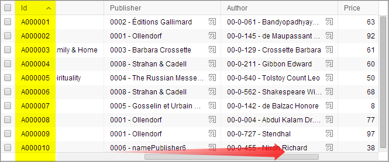
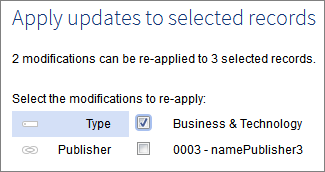
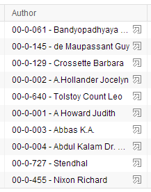
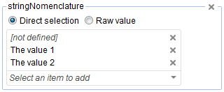
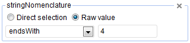

Release date: March 3, 2014
This version contains notable evolutions, including the following:
Non-scrolling primary key columns in tabular views
Blocking validation for constraints
Replication of aggregated lists
In tabular views, primary key columns now remain in the same position when the table is horizontally scrolled. This helps the user keep track of the rows currently displayed, even when viewing the right-most columns of the table.

It is now possible to select or deselect multiple records at a time by selecting the first record, holding the 'Shift' key, then selecting the last record.
It is now possible to apply the previous modifications to be performed on a record to one or more selected records. When doing so, the user can choose which modifications to apply.

The 'Preview' buttons included in tables have been improved. They are now uniformly right-justified, and stay visible when columns are resized.

For aggregated lists, it is now possible to define how many new occurrences can be added upon form submission.
It is now possible to choose between searching for foreign keys by selecting them ('Direct selection') and searching based on their labels. In order to avoid cluttering the search interface, this choice is only available in advanced mode.


The property displayInMenu has been added to service declaration in the data model in order to specify whether the service will be displayed under service buttons on nodes and in 'Services' menus.
For more details, see UI services declaration and configuration.
A method now exists in the Java API to add a JavaScript function that listens for workspace resizing. This allows synchronizing the size of an HTML element with the workspace size.
See UIJavaScriptWriter.addJS_addResizeWorkspaceListener in the Java API for more information.
A new buildButtonPreview method has been added to UIComponentWriter to build a preview button based on a UIHttpManagerComponent instead of a String.
This is now the recommended method for generating a preview button, combined with the use of setCloseButtonSpec by the UIHttpManagerComponent.
See buildButtonPreview and setCloseButtonSpec in the Java API for more information.
The definition of XML schema facets has been enhanced to be able to specify the behavior of a constraint when validation errors occur. It is now possible to indicate that the constraint must always remain valid after an operation has been performed. The specific behavior when validation errors occur can be defined on:
XML Schema facets
Uniqueness constraints
Some EBX5 facets
Foreign key constraints
For more information, see Blocking and non-blocking constraints and Foreign key constraint.
As a consequence of adding the new element osd:validation, the definition of specific severities and custom validation messages has been moved from the element osd:validationMessage to osd:validation. Previous custom validation messages defined in the element osd:validationMessage are still supported, but it is recommended to put custom validation messages in the new osd:validation element. Validation messages cannot be defined in both osd:validation and osd:validationMessage.
The new method ProcedureContext.setBlockingConstraintsDisabled(boolean) has also been added to the Java API to allow deactivating or activating blocking constraints during the execution of a procedure. This allows flexibility for procedures under certain circumstances by disabling blocking constraints defined in a data model.
See setBlockingConstraintsDisabled in the Java API for more information.
In the user interface, the option to ignore inherited and computed values when comparing two entities (data spaces, data sets, tables, records) has been added. This option is particularly appropriate for identifying the raw data changes made by end users. This option corresponds to the notion of "unresolved mode" that already existed in the Java API.
This option can be used as follows:
Directly in the user interface data space 'Compare' service
For workflows: For a 'Compare contents' user task in a workflow model, this comparison type can be specified in the input parameter 'Comparison filter'.
For web component: Pass the parameter compare.filter=persistedValuesOnly.
See the built-in UI service Compare contents and UIHttpManagerComponent.setCompareFilter in the Java API for more information.
For performance gains using this option, see the Faster comparisons section.
Update operations can override a blocking constraint by setting the new property blockingConstraintsDisabled to true.
See Validation error management policy and the data services insert, update, delete and multi requests for more information.
The ability to use data services to lock or unlock the user interface has been added, in order to prevent non-administrator users from accessing EBX5.
See User interface operations for more information.
It is now possible to allow broadcasts of a delivery data space even if it contains validation errors.
See Conditions for information about the broadcast conditions.
The D3 Java API has been extended to offer slave administrative functionality, such as getting the last broadcast snapshot based on the slave delivery data space.
A D3 engine factory now exists and contains methods that create master and slave engines.
See D3NodeFactory API for more information.
It is now possible to replicate aggregated lists.
Certain limitations still exist. See Data model restrictions for replicated tables for details.
History auxiliary table names now follow the same naming pattern as auxiliary replicated tables; they are named after the main table, suffixed by the list path.
Previously, deleted columns were only set to 'disabled' state, without deleting them. This meant that they remained in the replica, but were no longer updated. Now, when a column is deleted from model, it is immediately removed from the replica table.
From the Administration area, under Workflows, it is now possible to export the records of the 'Work items' table to CSV format using the Actions menu.
When 'Administrative delegation' was introduced in version 5.4.0, the default directory instance was unable to define permissions for users to be able to edit their own profiles.
A dedicated policy can now be specified for this purpose in the default directory administration.
The method addServiceButton has been added in order to allow inserting a service button to the right of any form node.
See UIResponseContext.addServiceButton in the Java API for more information.
The methods getNodeActionPermissionForService and getTableActionPermissionForService have been added in order to retrieve the permissions for services on nodes and tables, respectively.
See ServicePermission.getNodeActionPermissionForService and ServicePermission.getTableActionPermissionForService in the Java API for more information.
The method setPageSize has been added for specifying the default number of records to show per page.
See UIHttpManagerContext.setPageSize in the Java API for more information.
A method has been added to ensure the proper delimitation of string predicate criteria that may contain both single and double quotes.
See encodeLiteralStringWithDelimiters in the Java API for more information.
The client-side browser rendering strategy for tabular views has been optimized to provide a smoother user experience. Notably, there is now a shorter wait time before the user interface becomes accessible while loading a table in the workspace.
The table loading process in semantic mode has been improved to reduce the number of queries executed on the database. Initial table loading is now at least 30% faster.
A transaction can be cancelled for various reasons: a trigger exception, a permission error, a blocking or structural constraint violation, etc. In semantic mode, in the past, the Java cache associated with the data space was reset in an extensive manner for such cases.
Now, only resources associated with the modified tables are reset. Consequently, the availability of data spaces after a transaction cancellation is significantly improved.
The validation state of a data set is also no longer reset when a transaction is cancelled. Now, it is no longer necessary to fully revalidate a data set after a transaction has been cancelled since its validation state remains valid.
For performance reasons, incremental search on drop-down menus is now limited to referenced tables of less than 20 000 records. If a referenced table has more than 20 000 records, the user can still search by pressing 'Enter' after inputting the full search phrase.
Under certain conditions, using the new option to ignore inherited and computed values when comparing two entities results in performance several orders of magnitude faster than the default mode comparing all values. When a limited number of changes exist between the entities being compared, this option is especially beneficial.
See the evolution Comparisons of raw persisted data for more information.
The editing of workflow technical tables is now deactivated by default, except for labels, comments and data context variables.
This evolution serves to secure the workflow tables. All workflow execution is based on these tables, thus, guaranteeing their integrity is essential.
Nevertheless, it is possible to activate editing of the workflow technical tables, by setting the property ebx.manager.workflow.technicalTables.edition to true in the EBX5 main configuration file. If editing is activated, all fields that can be modified enter read-write mode.
See EBX5 main configuration file for general information about the configuration file.
Filters defined on foreign key constraints in blocking mode are no longer blocking. That is, a foreign key constraint becomes non-blocking if a referenced record exists but does not satisfy a foreign key filter. Updates that would result in this state are no longer rejected and thus a validation error will occur.
See alsoForeign key blocking mode
All blocking constraints, except structural constraints, are now disabled when importing archives. This evolution is useful, as it allows flexibility upon archive imports where, under certain circumstances, the import of invalid values must be allowed. For instance, importing foreign key values referencing records that are not yet imported is allowed.
Previously, the bug 9275 may have been exploited in order to hide some UI services from being displayed in menus.
For example, a service defined to only be able to be used in a workflow user task, or one that could only be started from another service.
As a consequence of fixing bug 9275, it is no longer possible to use ServicePermission to hide a service from menus, as the execution of the service would also be forbidden by the same ServicePermission rule.
Instead, use the displayInMenu property in the service declaration in the data model to hide the entry from menus.
On IE8, as a result of the fixed columns enhancement, if a field defines a UI bean that uses UITableCellStyleHandler.setBackgroundImage(), the cell background image is not applied.
In order to upgrade your version of EBX5, perform the following steps:
Backup your repository, including the RDBMS and the directory ebx.repository.directory.
Replace the *.war and ebx.jar files on your application server.
[8373] Aggregated lists nodes cannot have history disabled.
A NullPointerException occurs when compiling a data model if history is disabled for an aggregated list node.
[8938] Error when loading relational or historized tables with disabled indexes on disabled columns.
After upgrading to version 5.4.1, an error occurs when accessing a mapped table (relational, historized or replicated), if it contains previously disabled indexes on previously disabled columns.
Error message is:
"Caused by: java.lang.IllegalStateException: Column 2 not found on living columns of [/root/myTable]"
[8996] Pagination for table views is not optimized for sorts on non-indexed columns with filters.
When the sort criteria do not correspond to an available index, the optimizer always uses the primary key index, although some other index might solve the request filters more efficiently.
[9108] A blocking error occurs when a replica table name is invalid.
Replica table names are not checked for validity, unlike for other mapped modes.
Invalid names could be caused by unsupported characters, excessive length, and reserved names.
[9290] DDL script fails when there are multiple repositories with the same prefix in different schemas.
Verifications performed prior to executing DDL scripts may return an erroneous result if there is a name collision between database objects located in distinct schemas. This causes the DDL script to abort.
[9378] Wrong database replica is used for on-demand replication if the table also declares 'onCommit' replication.
If a schema table has declared both 'onCommit' and 'onDemand' replication, the 'onDemand' replication targets the same replica table as the one declared for 'onCommit'.
[9484] Method AdaptationTable.equals(AdaptationTable) always returns true.
The equals method of AdaptationTable always returns true when comparing two AdaptationTables.
[9680] Error occurs after purging a repository containing replicated tables.
If a purge is executed on a repository where replica tables have been created, it partially deletes their metadata.
At the next compilation of the data model containing the replicated tables, the following error occurs:
"java.lang.IllegalStateException: Cannot assign name EBXmyTable0 to replicated table AspectPath[/root/myTable], as it already exists in the database."
A workaround is to disable the replication unit; this enables accessing the instances of the data model, although the error will still reappear if the replication unit is re-enabled with the same table name.
[9720] Password type is not supported in replicated tables.
If a table that includes a field of type osd:password is declared in a replication unit, this causes the compilation error "Password fields are not supported for replication". Moreover, disabling the field using the tag <osd:replication disable="true" /> has no effect. Password fields should be systematically ignored, as they are for history.
[9724] In a semantic data model, the user can select a relational data model as a container for a foreign key in the same data space.
In the DMA, in a semantic data model, it is possible to select a relational data set as the container for a foreign key constraint. It should not be possible to select a relational data set if the current data model is semantic, or conversely.
[9761] An error occurs when accessing the content of a computation rule in the data model assistant.
In the DMA, an exception occurs when the user accesses a computation rule.
[9053] An exception occurs when accessing the "Database tables" table to create a deletion request.
If a data model defines mapped tables under different root names, any attempt to purge these mapped tables once mapped mode is deactivated results in an exception when accessing 'Database tables'.
[9364] Fatal error when history is activated on a table with an embedded aggregated list inside another list.
A fatal error occurs while accessing the history of a record when the table contains an aggregated list under another list.
[9751] Fatal error occurs when trying to access the history view of tables that use externalized labels.
It is not possible to access the history of a table for which externalized labels are defined in the schema.
[6272] In relational mode, blocking mode should be disabled for foreign keys in some circumstances.
A foreign key to a relational data space that references a non-existent record blocks archive imports. It also blocks other types of imports (XML, CSV), for example in case of a self-referencing foreign key. Even though the product documentation specifies this restriction, the product should provide a way to temporarily disable the constraint.
[6274] Data validation report lost.
After trying unsuccessfully to correct a validation error or being denied permission to modify a record, the data set validation report is lost.
[8994] It is not possible to access a data set while it is being validated.
While validation is running, it is not possible for the user interface to get the validation report. Therefore, the data model structure cannot be displayed until the validation is complete.
[9050] In relational mode, validation of foreign keys with filters may be errorneous in some cases when importing an XML or a CSV file.
Foreign keys filters such as programmatic TableRefFilter or XPath filters may raise a ConstraintViolationException when importing an XML or a CSV file into a relational table. This error occurs depending on the order of the values to be imported from an XML or a CSV file.
[9715] Validation should not be called when comparing data spaces.
When comparing two data spaces, validation should not be called.
[9722] It is not possible to access a data set while an ancestor or a child data set is being validated.
While validation is running on a child or ancestor data set, it is not possible for the user interface to get the validation report of this data set. Therefore, the data model structure cannot be displayed until the validation is complete.
[5675] In a table view, columns are sorted by their values instead of their labels.
When sorting the columns in a table view on a field for which value labeling is enabled, the sort should be performed on the labels instead of the values. This is the case for example for foreign keys and enumerations (see SchemaNode.displayOccurrence for more details on value labeling).
[6069] The drop down list for a foreign key can be sorted incorrectly.
The list of available values for a foreign key should be sorted alphabetically based on the label. It is not the case for example when a field involved in the label enables itself some labeling (for example, it is an xs:enumeration or a osd:tableRef).
[8099] A fatal error occurs when creating a new record in a hierarchical view.
In a hierarchical view, for certain types of hierarchy dimensions, a fatal error occurs when creating a new record.
[8279] Advanced search criteria using foreign key fields are displayed by their values instead of their labels.
When using the advanced search, if the user creates a criterion involving a foreign key field, this criteria displays the values instead of the labels in the drop-down menu.
[8618] A fatal error occurs in the associated data set after publishing updated data model.
This issue occurs when one user changes the structure of an existing data model and publishes it, while a second user is using the previous structure in an associated data set. A fatal error occurs for the second user.
[8913] Blank page is displayed when accessing a data set associated with a data model with a service.
If a data model contains a service with 'Activation paths', a blank page is displayed when the user accesses an associated data set.
[8920] Slow loading time when jumping to the last page of a relational table with many records.
In a relational table with a large number of records, when the user clicks on the pagination button to jump to the last page, loading takes a long time.
[8958] Too many requests are sent by the searchable drop-down menu.
When the user inputs characters into the searchable drop-down menu slowly, one-by-one, a selection request is executed by the server at each pause. While this strategy is acceptable for small tables, it becomes quite expensive for large tables.
[8984] Unset nodes without orphans disappear after deleting a saved filter in a hierarchy view.
In a hierarchy view, after deleting a saved filter, unset nodes without orphans disappear.
[9140] Cannot change to other paginated pages in a hierarchy view if 'Display root node' is set to 'No'.
In a hierarchy view with 'Display root node' set to 'No', the user cannot navigate to other pages in the pagination.
[9165] Cannot navigate to another paginated page when the user moves or attaches a node in a hierarchical view.
In a hierarchical view, if the user selects to move or attach a node, it is not possible to navigate to another paginated page.
[9172] In a filtered hierarchy view based on a recursive foreign key, selecting all includes undisplayed records.
When the user selects all records in a filtered hierarchy view based on a recursive foreign key, filtered records are included in the selection. Only records included in the view should be selected when selecting all records.
[9177] Error occurs when deleting all records in a hierarchy view.
When a user deletes all the records in a hierarchy view, an error occurs.
[9393] An error occurs when accessing a hierarchy based a foreign key referencing a field in a different data set.
If the default access permission defined on the target data set of a foreign key is "hidden", an exception occurs when accessing the hierarchy.
[9403] On Firefox, the documentation pane does not display after clicking the help button for "Optimize & Refactor".
On Firefox version 26, when the user clicks the help button for "Optimize & Refactor" in the data set service menu, the documentation pane does not display. The service page displays instead.
[9425] Cannot remove criteria after closing the logical block pop-up.
This issue occurs when the user adds a search criterion in advanced mode. If the user adds a logical block then closes it without adding any criterion, previously added criteria cannot be removed.
[9429] Incorrect pagination is displayed for a record after sorting in a tabular view.
In a data set, if the user creates records in which at least two fields are empty and then sorts the table, pagination is incorrectly displayed after advancing to the next page several times.
[9430] An error occurs after user changes pages in a tabular view containing sorted fields.
When a table is sorted on a tableRef column having these properties :
- all records have null value for this column,
- the colomn is a tableRef,
- the column has a label defined,
- the label does not use primary key columns in the same order;
an error occurs when user tries to access the previous page.
[9487] Any user can set a view as default for all users.
Any user can set a view as the default view. As there is only one default view for a table for all users, only the owner of the data set should be allowed to set a default view. This was the behavior in version 4.x.
[9675] Incorrect result displayed when searching in a hierarchy view that specifies an order.
This issue occurs when the user searches in a hierarchy view that specifies 'Ordering node'. Records in this hierarchy view are still displayed even though they do not contain searched value.
[9716] An error occurs when a unique field also defines a programmatic enumeration.
A PathAccessException occurs when duplicate values are set for a unique field that also defines a programmatic enumeration.
[9804] Data set 'Actions' menu inactive if it contains a table/field with an empty 'Node category'.
This issue occurs when the user defines an empty node category for a table or field. After the user publishes the data model and accesses an associated data set, the data set 'Actions' menu in the navigation pane is inactive.
[8643] No error message given when user accepts a user task for which the publication no longer exists.
In a data workflow, if the user accepts a work item of a user task whose publication has been unpublished, no error message is given.
[8890] No error message displayed when a user accepts a work item that no longer exists.
In a data workflow, if the user accepts a work item belonging to user task whose completion criteria has been satisfied by another user's accept or reject action, a blank screen is displayed.
[8940] No email sent when a workflow is completed if 'Notify the creator' is set to 'Yes'.
No email is sent to the creator upon workflow completion, even if 'Notify the creator' is set to 'Yes'. No error message is displayed, but a ClassCastException is logged.
[9037] Incorrect validation errors in the priority icons table.
When validating the 'Priorities' table in the workflow configuration, a validation error appears: "Icon / Specific icon url : Field 'Specific icon url' is mandatory.". This field should be optional.
[9151] Missing a 'Back' button to modify date range when launching 'Close and delete snapshots...' service.
In the delivery data spaces table on a D3 slave node, if the user uses the 'Close and delete snapshots...' service and specifies an invalid date range, there should be a 'Back' button to modify the date range.
[9223] Non-admin users cannot broadcast delivery data spaces belonging to other users.
On a D3 master node, a non-admin user cannot broadcast a delivery data space owned by another user even if the correct permissions are set.
[9361] Error on broadcast if last broadcast snapshot is closed and deleted.
When a user attempts to broadcast a new snapshot and the last broadcast snapshot has been closed and deleted, a NullPointerException occurs and the operation rolls back. It should not be possible to close the last broadcast snapshot in the master or the slave nodes.
[9367] Cannot rebroadcast a previously broadcast snapshot.
After broadcasting a snapshot, then broadcasting another snapshot, the broadcast action for the first snapshot is disabled.
[9379] Cannot view HTTP and JMS parameters within '[D3] Slave configuration'.
Under 'Master information' on the slave node, the communication layer parameters defined in the terminal nodes /root/masterInfo/soap and /root/masterInfo/jms always display '[not defined]'.
[9719] Method D3Broadcast.getDeliveryModes() always returns all delivery modes.
When using the D3 API, the method D3Broadcast.getDeliveryModes() always returns cluster and federation mode, even if only one is used.
[8902] Inaccurate note regarding locked data spaces in 5.4.1 release note.
In the 5.4.1 release note, for "New lock and unlock data space operations", there is a note stating that users cannot modify a data space while it is locked. Administration users and the user that locked the data space can modify the data space even while it is locked.
[9105] No documentation for restoring navigation pane to default size.
There is no documentation for restoring the navigation pane to its default size.
[9416] Restrictions on replicating user-defined attributes should be documented.
The documentation should indicate that user-defined attributes are not supported by replication.
[9191] Multiple IP addresses in the HTTP header are not handled properly.
If the HTTP header of a request contains "X-Forwarded-For: ip-client, ip-proxy1, ip-proxy2", no updates can be performed on the data if history is enabled.
[6380] It should be possible to create XPath requests with quotes and double quotes in the predicate.
It should be possible to create XPath requests with quotes and double quotes in the predicate. Such characters should be escaped.
[8781] A decimal field configured with no decimal places saves entered decimals.
Non-significant leading or trailing zero digits are permitted, but should be saved according to the maximum number of decimal places defined.
[8839] Permalink to a user in the data set permissions table does not work if name contains cross-scripting.
A permalink obtained from the 'Access rights by profile' table of a data set does not work if the user's name contains cross-scripting.
[8959] An error occurs when populating foreign key values during record creation from an osd:select.
Contrary to a simple osd:select, for example /root/p[fkc/oid=${../oid}], if an osd:select is based on a multiple-link table reference accessor, for example, /root/p[fka/fkc/oid=${../oid}], the value of fka cannot be pre-populated, as the existence and/or the multiplicity of the target fkc is unknown.
Similarly, if the osd:select is only based on part of a composite table reference, not all the necessary values to preset the foreign key are available. In these two cases, an exception may occur.
[9444] An error occurs during logging if the log category is not initialized.
The methods LoggingCategory.getKernel() and LoggingCategory.getWorkflow() return null if the concerned log category is not yet initialized. This results in a NullPointerException.
[9458] Add-on administration branch is closed and not reopened when needed.
If an add-on administration branch has been closed because the add-on was no longer deployed, the branch should be reopened if the add-on is re-deployed.
[7377] The user interface displays all areas despite permalink targetting a specific area.
When a user who does not have permission to access a given data model, data set, or workflow model opens a permalink to it, the user interface displays a full scope.
[8762] An error occurs when accessing the URL of a built-in UI service.
When accessing the URL of a built-in UI service, an error occurs because it is being looked for in the current module.
[8876] A bug in Chrome version 31 causes the workflow IFrame to never load.
When accessing a user task on Chrome version 31, sometimes the IFrame never loads.
[8934] An exception occurs while accessing a table on which there are persisted filters with enumeration criteria.
This exception occurs when a filter is saved with an enumeration containing only 'empty' as the selected value. The resulting atomic criterion, with no right part osd:is-null(...) results in a NullPointerException.
[9014] Bug in Chrome version 32 causes Ajax requests to fail.
On Chrome version 32, all Ajax requests in the user interface fail due to a bug in Chrome.
[9024] On IE8, iFrames do not display content in a hidden custom tab pane.
In a UIFormPane inside a UIFormPaneWithTabs, if the tab pane is hidden, the iFrames inside it are not loaded properly.
[9091] Icons are missing on Chrome 31 if EBX5 is running on a WebLogic application server.
Icons are missing from the user interface on Chrome version 31 if EBX5 is running on a WebLogic application server.
[9149] On IE8 and Chrome, iFrames do not display their content in a custom tab pane.
Some JavaScript does not work, as it is not recognized as "text/script" content.
[9153] Icons are missing when EBX5 is running on Websphere Application Server.
The user interface is missing icons when EBX5 is running on Websphere Application Server.
[9203] Comparison user interface displays the values of password nodes if defined under a complex terminal.
The comparison user interface displays the values of password nodes in the clear if they are defined under a complex terminal. The value should be displayed as stars.
[9278] An error occurs when adding a search criterion on a foreign key that references a table in another data set.
An InvalidSchemaException occurs when adding a search criterion on a foreign key that references a table in another data set in the same data space.
[9333] On IE8, there is a misalignment of the pagination text and buttons.
On IE8, the text and buttons related to pagination are not vertically aligned.
[9424] In the comparison view, records are displayed using their ids instead of their labels.
In the comparison view, records should be displayed using their labels. They are currently displayed using their ids.
[9459] The number of displayed columns is still limited even if a custom view is applied.
The number of displayed columns should not be limited if a custom view is applied.
[9672] On Firefox, form is blank after clicking documentation pane of a tab under field or table properties.
On Firefox versions 12.0 and 26.0, when the user clicks the documentation pane button of a tab under field or table properties, the form displays as a blank area.
[9762] Incorrect expand/collapse behavior for deep and complex groups in a form.
Expand and collapse actions do not behave correctly for complex groups in a form with multiple levels.
[9782] Table view column definitions do not work properly if two node paths start with the same string.
If the table contains the nodes "node1" and "node12", displaying the node "node12" will also display the node "node1", as it is considered to be an ancestor of "node12".
[9052] Permissions are not evaluated when accessing user information.
When a user accesses their own user information in the user interface, permissions are not evaluated. It is not possible to hide the fields.
[9275] Permission evaluation for a service does not take ServicePermission rules into account.
The method SessionPermissions.getInstanceActionPermissionForService(ServiceKey, Adaptation) does not evaluate the ServicePermission rules.